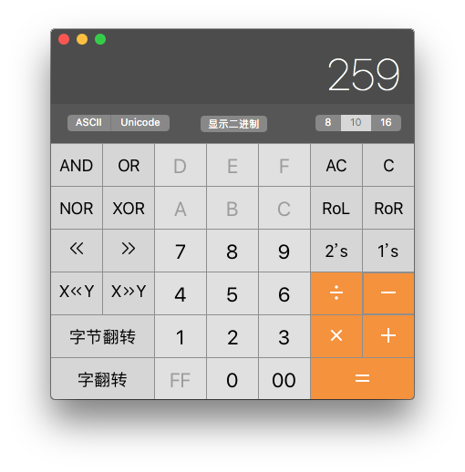
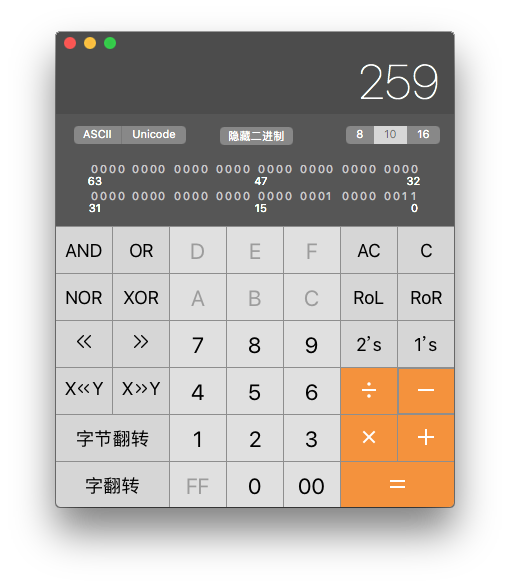
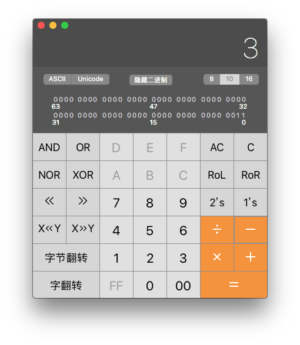

WebGL Notes
Query Info
- GLenum getError()
- any getBufferParameter(GLenum target, GLenum pname)
-
pname returned type BUFFER_SIZE GLint BUFFER_USAGE GLenum - any getFramebufferAttachmentParameter(GLenum target, GLenum attachment, GLenum pname)
-
pname returned type FRAMEBUFFER_ATTACHMENT_OBJECT_TYPE GLenum FRAMEBUFFER_ATTACHMENT_OBJECT_NAME WebGLRenderbuffer or WebGLTexture FRAMEBUFFER_ATTACHMENT_TEXTURE_LEVEL GLint FRAMEBUFFER_ATTACHMENT_TEXTURE_CUBE_MAP_FACE GLint - any getRenderbufferParameter(GLenum target, GLenum pname)
-
pname returned type RENDERBUFFER_WIDTH GLint RENDERBUFFER_HEIGHT GLint RENDERBUFFER_INTERNAL_FORMAT GLenum RENDERBUFFER_RED_SIZE GLint RENDERBUFFER_GREEN_SIZE GLint RENDERBUFFER_BLUE_SIZE GLint RENDERBUFFER_ALPHA_SIZE GLint RENDERBUFFER_DEPTH_SIZE GLint RENDERBUFFER_STENCIL_SIZE GLint - any getTexParameter(GLenum target, GLenum pname)
-
pname returned type TEXTURE_MAG_FILTER GLenum TEXTURE_MIN_FILTER GLenum TEXTURE_WRAP_S GLenum TEXTURE_WRAP_T GLenum - any getProgramParameter(WebGLProgram program, GLenum pname)
-
pname returned type DELETE_STATUS GLboolean LINK_STATUS GLboolean VALIDATE_STATUS GLboolean ATTACHED_SHADERS GLint ACTIVE_ATTRIBUTES GLint ACTIVE_UNIFORMS GLint - DOMString? getProgramInfoLog(WebGLProgram program)
Shaders
- getActiveAttrib(WebGLProgram program, GLuint index)
- WebGLActiveInfo? getActiveUniform(WebGLProgram program, GLuint index)
- [WebGLHandlesContextLoss] GLint getAttribLocation(WebGLProgram program, DOMString name)
- any getVertexAttrib(GLuint index, GLenum pname)
-
pname returned type VERTEX_ATTRIB_ARRAY_BUFFER_BINDING WebGLBuffer VERTEX_ATTRIB_ARRAY_ENABLED GLboolean VERTEX_ATTRIB_ARRAY_SIZE GLint VERTEX_ATTRIB_ARRAY_STRIDE GLint VERTEX_ATTRIB_ARRAY_TYPE GLenum VERTEX_ATTRIB_ARRAY_NORMALIZED GLboolean CURRENT_VERTEX_ATTRIB Float32Array (with 4 elements) - any getShaderParameter(WebGLShader shader, GLenum pname)
-
pname returned type SHADER_TYPE GLenum DELETE_STATUS GLboolean COMPILE_STATUS GLboolean - WebGLShaderPrecisionFormat? getShaderPrecisionFormat(GLenum shadertype, GLenum precisiontype)
- DOMString? getShaderInfoLog(WebGLShader shader)
- DOMString? getShaderSource(WebGLShader shader)
- any getUniform(WebGLProgram program, WebGLUniformLocation location)
-
uniform type returned type boolean GLboolean int GLint float GLfloat vec2 Float32Array (with 2 elements) ivec2 Int32Array (with 2 elements) bvec2 sequence<GLboolean> (with 2 elements) vec3 Float32Array (with 3 elements) ivec3 Int32Array (with 3 elements) bvec3 sequence<GLboolean> (with 3 elements) vec4 Float32Array (with 4 elements) ivec4 Int32Array (with 4 elements) bvec4 sequence<GLboolean> (with 4 elements) mat2 Float32Array (with 4 elements) mat3 Float32Array (with 9 elements) mat4 Float32Array (with 16 elements) sampler2D GLint samplerCube GLint - WebGLUniformLocation? getUniformLocation(WebGLProgram program, DOMString name)
- [WebGLHandlesContextLoss] GLsizeiptr getVertexAttribOffset(GLuint index, GLenum pname)
Additional, invoke the getParameter function with the following constants:
- ELEMNT_ARRAY_BUFFER_BINDING
- MAX_VERTEX_ATTRIBS
General
- any getParameter(GLenum pname)
-
pname returned type ACTIVE_TEXTURE GLenum ALIASED_LINE_WIDTH_RANGE Float32Array (with 2 elements) ALIASED_POINT_SIZE_RANGE Float32Array (with 2 elements) ALPHA_BITS GLint ARRAY_BUFFER_BINDING WebGLBuffer BLEND GLboolean BLEND_COLOR Float32Array (with 4 values) BLEND_DST_ALPHA GLenum BLEND_DST_RGB GLenum BLEND_EQUATION_ALPHA GLenum BLEND_EQUATION_RGB GLenum BLEND_SRC_ALPHA GLenum BLEND_SRC_RGB GLenum BLUE_BITS GLint COLOR_CLEAR_VALUE Float32Array (with 4 values) COLOR_WRITEMASK sequence<GLboolean> (with 4 values) COMPRESSED_TEXTURE_FORMATS Uint32Array CULL_FACE GLboolean CULL_FACE_MODE GLenum CURRENT_PROGRAM WebGLProgram DEPTH_BITS GLint DEPTH_CLEAR_VALUE GLfloat DEPTH_FUNC GLenum DEPTH_RANGE Float32Array (with 2 elements) DEPTH_TEST GLboolean DEPTH_WRITEMASK GLboolean DITHER GLboolean ELEMENT_ARRAY_BUFFER_BINDING WebGLBuffer FRAMEBUFFER_BINDING WebGLFramebuffer FRONT_FACE GLenum GENERATE_MIPMAP_HINT GLenum GREEN_BITS GLint IMPLEMENTATION_COLOR_READ_FORMAT GLenum IMPLEMENTATION_COLOR_READ_TYPE GLenum LINE_WIDTH GLfloat MAX_COMBINED_TEXTURE_IMAGE_UNITS GLint MAX_CUBE_MAP_TEXTURE_SIZE GLint MAX_FRAGMENT_UNIFORM_VECTORS GLint MAX_RENDERBUFFER_SIZE GLint MAX_TEXTURE_IMAGE_UNITS GLint MAX_TEXTURE_SIZE GLint MAX_VARYING_VECTORS GLint MAX_VERTEX_ATTRIBS GLint MAX_VERTEX_TEXTURE_IMAGE_UNITS GLint MAX_VERTEX_UNIFORM_VECTORS GLint MAX_VIEWPORT_DIMS Int32Array (with 2 elements) PACK_ALIGNMENT GLint POLYGON_OFFSET_FACTOR GLfloat POLYGON_OFFSET_FILL GLboolean POLYGON_OFFSET_UNITS GLfloat RED_BITS GLint RENDERBUFFER_BINDING WebGLRenderbuffer RENDERER DOMString SAMPLE_ALPHA_TO_COVERAGE GLboolean SAMPLE_BUFFERS GLint SAMPLE_COVERAGE GLboolean SAMPLE_COVERAGE_INVERT GLboolean SAMPLE_COVERAGE_VALUE GLfloat SAMPLES GLint SCISSOR_BOX Int32Array (with 4 elements) SCISSOR_TEST GLboolean SHADING_LANGUAGE_VERSION DOMString STENCIL_BACK_FAIL GLenum STENCIL_BACK_FUNC GLenum STENCIL_BACK_PASS_DEPTH_FAIL GLenum STENCIL_BACK_PASS_DEPTH_PASS GLenum STENCIL_BACK_REF GLint STENCIL_BACK_VALUE_MASK GLuint STENCIL_BACK_WRITEMASK GLuint STENCIL_BITS GLint STENCIL_CLEAR_VALUE GLint STENCIL_FAIL GLenum STENCIL_FUNC GLenum STENCIL_PASS_DEPTH_FAIL GLenum STENCIL_PASS_DEPTH_PASS GLenum STENCIL_REF GLint STENCIL_TEST GLboolean STENCIL_VALUE_MASK GLuint STENCIL_WRITEMASK GLuint SUBPIXEL_BITS GLint TEXTURE_BINDING_2D WebGLTexture TEXTURE_BINDING_CUBE_MAP WebGLTexture UNPACK_ALIGNMENT GLint UNPACK_COLORSPACE_CONVERSION_WEBGL GLenum UNPACK_FLIP_Y_WEBGL GLboolean UNPACK_PREMULTIPLY_ALPHA_WEBGL GLboolean VENDOR DOMString VERSION DOMString VIEWPORT Int32Array (with 4 elements)
Getting Information Examples
Getting Active Attributes
var maxVertexAttribs = gl.getParameter(gl.MAX_VERTEX_ATTRIBS);
for (var i = 0; i < maxVertexAttribs; i++) {
var activeAttrib = gl.getActiveAttrib(gl.program, i);
if (activeAttrib) {
console.log(i);
console.log(activeAttrib);
}
}
An attribute variable is considered active if it is determined during the link operation that it may be accessed during program execution.
i means the enabled attribute array's index. activeAttrib is an instance of WebGLActiveInfo.
WebGLActiveInfo {
name: "vPosition",
size: 1,
type: 35666 // 0x8B52, const GLenum FLOAT_VEC4
}
To use getActiveAttrib method, you should pass the index of the attribute, which sometimes you don't know. In this situation, you'd have to act like above to iterate all of the vertex attributes. Second, the info returned by this method is less verbose than getVertexAttrib method. See below.
Getting Vertex Attributes
var maxVertexAttribs = gl.getParameter(gl.MAX_VERTEX_ATTRIBS);
for (var i = 0; i < maxVertexAttribs; i++) {
var flag = gl.getVertexAttrib(i, gl.VERTEX_ATTRIB_ARRAY_ENABLED);
if (flag) {
var bufferBinding = gl.getVertexAttrib(i, gl.VERTEX_ATTRIB_ARRAY_BUFFER_BINDING);
var isEnabled = gl.getVertexAttrib(i, gl.VERTEX_ATTRIB_ARRAY_ENABLED);
var arraySize = gl.getVertexAttrib(i, gl.VERTEX_ATTRIB_ARRAY_SIZE);
var arrayStride = gl.getVertexAttrib(i, gl.VERTEX_ATTRIB_ARRAY_STRIDE);
var arrayType = gl.getVertexAttrib(i, gl.VERTEX_ATTRIB_ARRAY_TYPE);
var isNormalized = gl.getVertexAttrib(i, gl.VERTEX_ATTRIB_ARRAY_NORMALIZED);
var currentVertexAttrib = gl.getVertexAttrib(i, gl.CURRENT_VERTEX_ATTRIB);
console.log(i); // 0
console.log(bufferBinding); // WebGLBuffer
console.log(isEnabled); // true
console.log(arraySize); // 2
console.log(arrayStride); // 0
console.log(arrayType); // 5126
console.log(isNormalized); // false
console.log(currentVertexAttrib); // Float32Array [0, 0, 0, 1]
}
}
Getting Attribute Location
var index = gl.getAttribLocation(gl.program, "vPosition"); console.log(index);
Returns the index of the generic attribute that is bound to that attribute variable.
Float32Array
The type of Float32Array is TypedArray. First, as the name suggests, Float32Array is an array that we can access to its elements in an array way:
var vertices = [
0.0, 0.5,
-0.5, -0.5,
0.5, -0.5
];
var theArray = new Float32Array(vertices);
console.log(theArray.length);
console.log(theArray[0]);
console.log(theArray[1]);
...
console.log(theArray[5]);
Second, Float32Array has the following additional properties:
- BYTES_PER_ELEMENT
- buffer
- byteLength
- byteOffset
console.log(theArray.BYTES_PER_ELEMENT); // 4 console.log(theArray.buffer); // ArrayBuffer(24) console.log(theArray.byteLength); // 24 console.log(theArray.byteOffset); // 0
Typed Array
| Name | Type | Element Size (in bytes) | Equivalent C Type | Range |
|---|---|---|---|---|
| Int8Array | Integer | 1 | singed char | [-128, 127] |
| Uint8Array | Integer | 1 | unsinged char | [0, 255] |
| Uint8ClampedArray | Integer | 1 | unsinged char | [0, 255] |
| Int16Array | Integer | 2 | short | [-32768, 32767] |
| Uint16Array | Integer | 2 | unsigned short | [0, 65535] |
| Int32Array | Integer | 4 | int | [-2147483648, 2147483647] |
| Uint32Array | Integer | 4 | unsigned int | [0, 4294967295] |
| Float32Array | Floating | 4 | float | [1.17549e-38, 3.40282e+38] |
| Float64Array | Floating | 8 | double | [2.22507e-308, 1.79769e+308] |
在C++语言中可以很方便地列出区间。
#include <iostream>
#include <limits>
using namespace std;
int main(int argc, char**argv) {
cout << numeric_limits<int>::min() << endl;
cout << numeric_limits<int>::max() << endl;
cout << numeric_limits<unsigned int>::min() << endl;
cout << numeric_limits<unsigned int>::max() << endl;
return 0;
}
看一个例子：
var data = [0, 8, 259];
var array = new Uint8Array(data);
array.forEach(element => {
console.log(element); // 0, 8, 3
});
最后一个元素的值，259, 为何变成了3?
Uint8是8位的无符号整数，从上表中看出其值域为[0, 255]. 259超出了此值域。对于超出部分，计算机只是简单地抛弃了，导致259变成了3. 利用Mac OS X中的计算器，可以非常直观地看出此问题。
运行计算器应用程序，按command+3, 将显示界面改为"编程器"，点击右上方的"10"按钮，输入"259". 此时计算机器以十进制显示数值259.
点击上方的"显示二进制"，可看出其二进制表示为"0000 0001 0000 0011"。
发现问题所在了。十进制259的二进制至少需要2字节才能完整地表示出来，高位字节部分为"0000 0001"，低位字节部分为"0000 0011"。它需要2字节的数据类型来存储，而我们却将它塞进了只有1个字符的Uint8数据类型中。
对于这种情况，计算机认为，既然您只想要1个字节，那我就将多出的1个字节的数据－高位字节所在的数据，抛弃掉，只向您返回低位字节的数据"0000 0011"。
点击二进制中高位字节部分的最后一个数字"1"，将其改变为"0"。
此时只留下了二进制的低位字节部分"0000 0011"，正对应于十进制的"3"。
我们可能想当然地认为，是计算机擅自进行了相应的转换，但这里并不存在"转换"，而只是存在"抛弃"。但由于我们作为人类只习惯于十进制思维，看不到二进制的处理细节，就会产生这种错觉。而计算机正好完全相反，本质上来讲，它只认二进制0和1，是各种各样的程序将这种二进制转换为我们所熟悉的十进制，还有略为熟悉的八进制，十六进制而已。
若要避免这种问题出现，在声明数据类型时，一定要注意其相应的值域。
再来看Uint8ClampedArray的情况。
var data = [-5, 8, 259, 376];
var array = new Uint8ClampedArray(data);
array.forEach(element => {
console.log(element); // 0, 8, 255, 255
});
Uint8ClampedArray更容易理解了，因为它采用的是十进制思维。它的十进制值域为[0, 255], 对于一切超出此值域的任何数值，它只是简单地"截断"了，只保留在此值域范围内的数值。